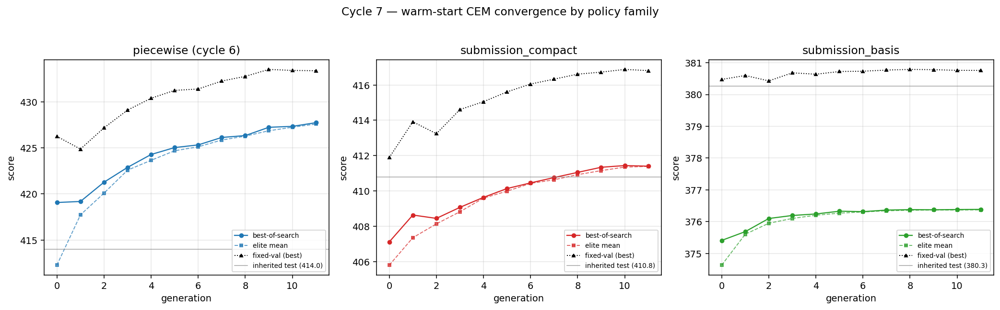
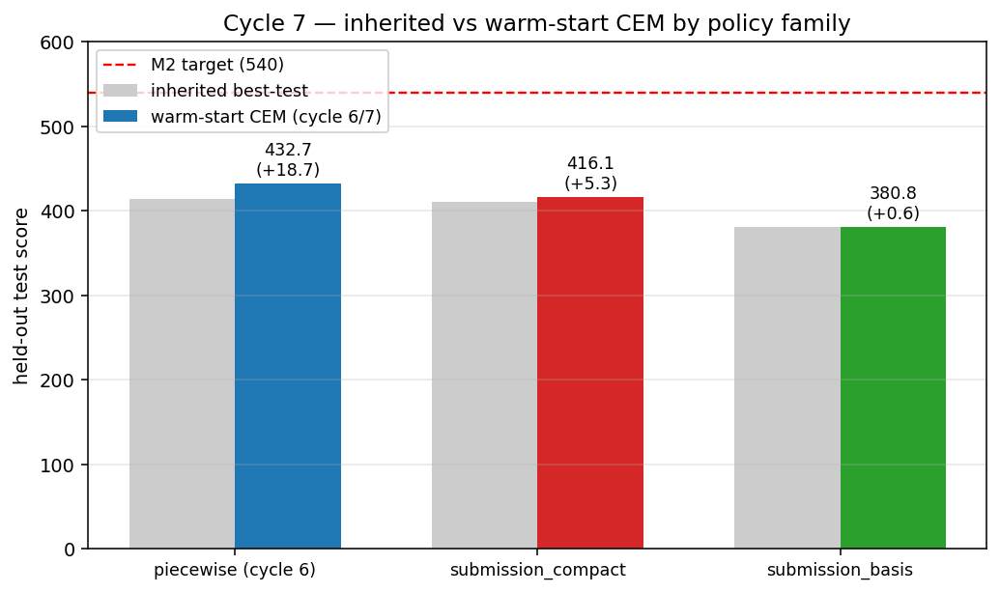
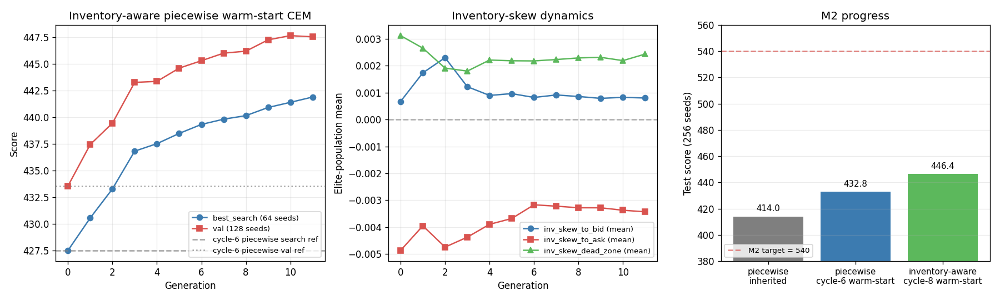
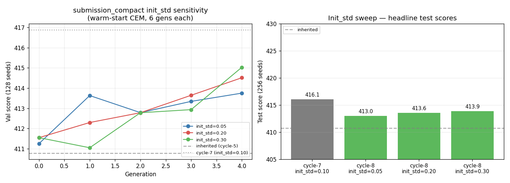
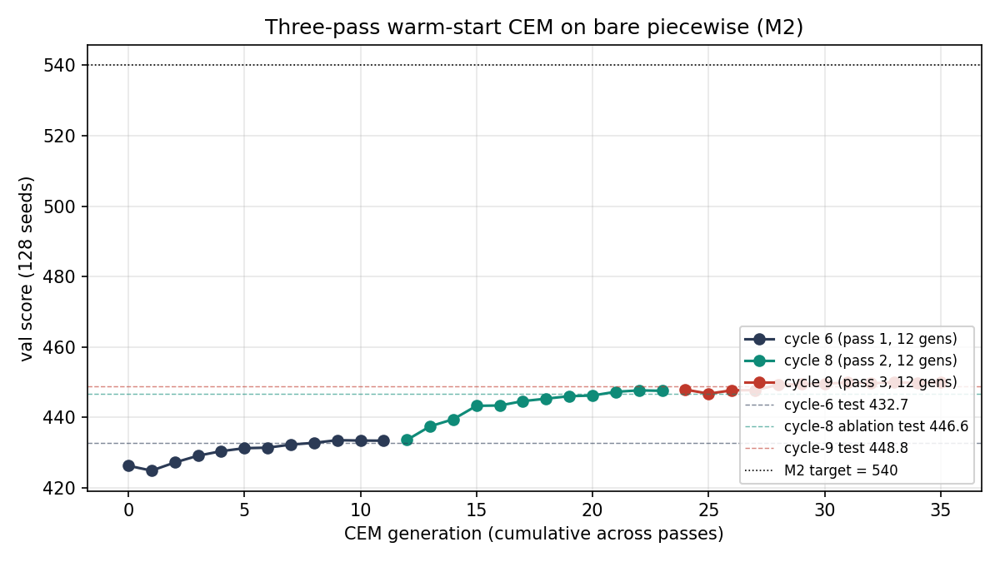
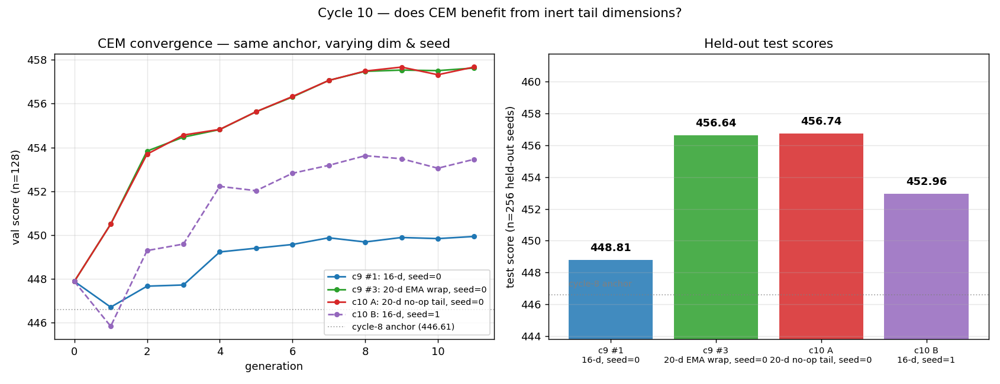
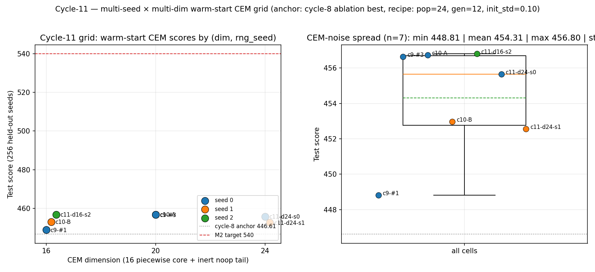
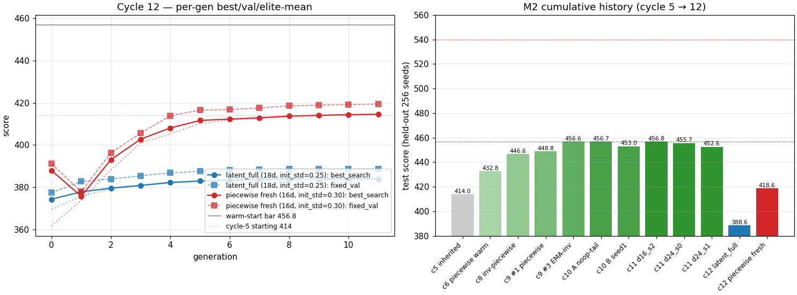

A self-contained narrative built up cycle by cycle. Last
updated 2026-05-04 (cycle 12 — best M2 score still
456.80 on a 16-d piecewise CEM at rng_seed=2. Cycle 12
ran two falsifying alternatives — capacity escalation via the
latent_full ladder rung (18-d, with EMAs over flow,
opportunity, fair-price, toxicity, competition, inventory) and
fresh-anchor piecewise with wide init_std — under the same compute
budget. Both landed decisively below the cycle-11 warm-start cluster
(test 388.6 and 418.6 respectively, vs warm-start 456.80). The simpler
family wins under matched compute; the saturation we observe at 457
is a recipe ceiling, not a capacity-or-anchor problem. Cycle 13
escalates the recipe.) Read top-to-bottom; later milestones build on
earlier ones.
At a glance.
Where we are. Active milestone is M2 (optimize on
the simple-AMM challenge); M1 closed at cycle 5.
Headline number. Best M2 test score
456.80 (held-out 256 seeds; 16-d piecewise CEM at
rng_seed=2), up from a cycle-5 starting line of ~414. Target: 540.
Gap remaining: ~83 pts.
What we've ruled out. Inventory-aware fee skew
(instantaneous and EMA-smoothed): both ablate to ≈ 0. The "inert
wrapper" pattern that produced the cycle-9 lift is rng-stream-offset
+ seed lottery, not real signal. Cheap multi-seed × multi-dim CEM
reps are saturating — the 7-cell empirical ceiling on the warm-start
anchor sits at 456.80 with std ≈ 3. New (cycle 12):
capacity escalation (the 18-d latent_full ladder rung)
doesn't help under matched compute — it tests at 388.6 from
defaults, 68 pts below warm-start. Fresh-anchor wide-init piecewise
tests at 418.6, 38 pts below warm-start — meaning the warm-start
refinement is doing real work that 12 generations of cold-start
CEM can't replicate.
Open question. Does doubling the generation
budget (gen=24) on the warm-start CEM lift past 457, or is that
a true recipe ceiling? Cycle 13 runs gen=24 to find out — if it
flatlines, we pivot to M3 with d16_s2 as the M2 deliverable
(~85% of way to 540).
Project in one paragraph. We have a step-by-step AMM
market-making simulator with two flavors — a synthetic "challenge"
mode used as a scoring benchmark, and a "realistic" mode whose price
process and retail flow are fitted from on-chain ETH/USDC data and
Binance ETHUSDT order-book data. Four research questions: (M1) does
the realistic mode actually look like the chain? (M2) can we beat the
benchmark scoring rule? (M3) does training in the easy mode generalize
to the realistic mode? (M4) how does optimal realistic performance
scale with policy complexity?
Glossary.
Piecewise (policy family). A 16-parameter fee
controller with a small/medium/large size-bucket structure plus
continuation/reversal weights, signal/toxicity decays, and base
fee/spread terms. Best-performing simple family on M2 to date.
CEM (cross-entropy method). A black-box
optimizer: each generation, draw a population from a Gaussian over
the current mean/std, score them, take the top-elite fraction
(here 20%), refit mean/std, repeat. Warm-start = initialize the mean
at a known-good anchor.
Anchor. The starting point for warm-start CEM
— typically the best params from the previous cycle.
edge_advantage. Submission's mean PnL minus the
fixed-fee normalizer's mean PnL across the seed batch (in
challenge-mode units). Drives the score together with the
challenge's exposure-and-fee structure.
Held-out seeds. Seeds 2000..2255 (n=256), used
only for the final test score; never seen during search (0..63) or
validation (1000..1127).
Init_std (init_std_frac). The Gaussian std in
generation 0 of CEM, expressed as a fraction of each parameter's
full range. We use 0.10 throughout.
Inert tail / no-op tail. Extra parameters in the
CEM search vector that cannot influence the score — used
to test whether wider sampling helps CEM regardless of structure.
RNG-stream-offset. Different dim counts in
CEM's per-candidate sampling consume different numbers of standard
normals, advancing the RNG state at different rates and producing
different sample sequences from gen 1 onwards even at the same
seed.
M1 — Validating the realistic simulator against on-chain markout
Headline. The realistic simulator's per-trade markout
distribution matches the on-chain ground-truth in shape but is
shifted right by ~2.7 bps in the mean (sim
+5.80 vs on-chain +3.06 bps for the canonical WETH/USDC v3 0.05% pool
on 2026-04-27). The whole CDF is shifted, not just the tails — the
simulator's polite retail flow has no MEV / fast-CEX adverse-selection
component, so the LP keeps closer to the full fee.
Setup
32 seeds × 10,000 12-second steps each (≈2½ days of simulated time
per seed) of the exact simple-AMM simulator in
real_data mode, with both submission and normalizer venues
running a fixed 5-bps fee — matching the canonical pool's tier. We
recorded every retail-routed trade with its executed price and the
fair price one block (12 s) later, then computed
markout_next from the LP's perspective:
log(ref_price / executed) for trades where the AMM bought X,
log(executed / ref_price) for trades where the AMM sold X.
Total: 165,288 retail trades.
Ground truth: uniswap-labs.research.markout_prod,
canonical pool 0x88e6a0c2...5640, 2026-04-27, n=4,293
swaps, $40 M USD volume; 200-bin APPROX_QUANTILES dump
because pulling the raw rows for one day exceeds BQ's 1 GB
billed-bytes ceiling. We also pulled per-day summaries for 2026-04-25
through 2026-04-29 to gauge day-to-day variability of the reference
(see research/experiments/2026-04-30-2240-m1-baseline-markout/results/bq_daily_summary.json).
Side-by-side percentile comparison
stat
on-chain (BQ, 4-27, n=4,293)
sim retail markout_now (n=165k)
sim retail markout_next (n=165k)
delta (sim_next − chain)
mean (bps)
+3.06
+5.79
+5.80
+2.74
std (bps)
5.23
5.80
9.82
+4.59
p1 (bps)
-10.14
-0.05
-8.54
+1.60
p5 (bps)
-2.91
+0.06
-2.80
+0.11
p25 (bps)
-0.24
+1.95
+1.86
+2.10
p50 (bps)
+2.42
+5.68
+5.67
+3.26
p75 (bps)
+6.43
+9.48
+9.44
+3.01
p95 (bps)
+10.48
+11.10
+14.41
+3.93
p99 (bps)
+13.35
+14.11
+21.14
+7.79
Figure 1. Left: empirical CDFs of
markout_next from the sim retail trades (red dashed,
n=165,262) and the on-chain canonical pool on 2026-04-27 (blue solid,
n=4,293). Both unimodal and right-skewed; the sim curve is shifted
right by ~2-3 bps across the whole interquartile range. Right:
histogram view of the same two distributions, with the on-chain
reference resampled from its quantile grid for visual density.
What the body of the distribution says
The simulator captures the qualitative shape of LP markout
remarkably well: both distributions are unimodal, right-skewed, bounded
near the fee value on the upper end, and dominated by mass between
roughly -5 and +12 bps. Markout-now std is essentially identical (sim
5.80 vs on-chain 5.23 bps), which means the trade-size distribution
and the AMM's per-trade impact-vs-fee math are calibrated reasonably
well — the simulator's per-trade volatility is on target.
The level of the simulator is too LP-favorable.
Mean shifted +2.74 bps, p25/p50/p75 each shifted by +2 to +3 bps,
sim's p5 (-2.80) is roughly where the on-chain p5 sits but every
percentile above that is too high. This is exactly the signature of a
missing constant per-trade tax on the LP — i.e. there's a mechanism
on-chain that takes ~2-3 bps off every retail fill, which the
simulator's polite Poisson retail doesn't reproduce. The leading
candidate is MEV / fast-CEX adverse selection: when
the chain price moves before the next block, fast actors snipe the AMM
and the LP gives up the move. The simulator's arb actor only acts at
discrete steps and only after price has already moved, so it can't
inflict the same drag on the LP.
What the tails of markout_next say
The right tail of markout_next is too fat in the
simulator (sim p99 = +21.1 vs on-chain +13.4). This is mostly a
between-trade-and-next-step price drift artefact: the regime-switching
tape draws one log-return per 12 s step, but on-chain the +12s
benchmark is constructed from real market timestamps where individual
trades land at fractional block positions. So the simulator's "fair
price one block later" carries the full per-step variance, while the
on-chain version carries less.
The left tail of markout_next is closer (sim p1 = -8.54
vs on-chain -10.14). The on-chain reference still has an extra
percentage point of left-tail mass, again consistent with sniping —
some fraction of on-chain retail fills get hit by a sharp adverse move
the moment they execute.
What we updated about our priors
Going-in prior was "body matches, tails don't." Reality is closer
to "shape matches, but the level is biased by a near-constant
~2-3 bps shift across the entire interior of the distribution." That's
a much stronger and more useful claim — it suggests one missing
mechanism (MEV) is responsible for most of the gap, rather than a
diffuse mismatch in many small details.
Caveats
Sample asymmetry & unfiltered on-chain mix.
On-chain reference is one day, n=4,293; simulator has n=165,288 across
32 seeds. The on-chain CDF is much noisier in the tails. Also,
markout_prod doesn't expose a router-vs-bot flag, so the
on-chain comparison set is "all trades on the canonical pool" — which
mixes router (~30%) with arb / MEV bots (~70% by count). The simulator
is generating only the router-equivalent flow plus an arb actor; the
gap between sim and chain may be partly that the on-chain mix is
weighted toward different trade populations. A natural cycle-3
follow-up is to filter the on-chain set to router-originated
transactions only and re-run the comparison.
Cycle 3 update — replication confirmed; fee-sensitivity rules out fee-misspec
Cycle 3 was supposed to run three sub-tasks: (a) router-filtered
on-chain pull, (b) seed-split replicate, (c) multi-day on-chain stitch.
The BigQuery MCP tool was unresponsive throughout cycle 3, blocking (a)
and (c). We executed (b) and added a fee-sensitivity sweep that
provides BQ-independent evidence for the same hypothesis.
(b) Replication on a fresh seed split
32 fresh seeds (100..131) of the same realistic-mode setup as
cycle 2:
retail markout (bps)
cycle 2 (seeds 0..31)
cycle 3 (seeds 100..131)
delta
mean now
+5.795
+5.780
−0.015
mean next
+5.795
+5.796
+0.001
The +2.74 bps shift vs on-chain reproduces exactly. Not a 32-seed
artefact.
Fee-sensitivity sweep
Eight fresh seeds × 5,000 12-second steps × four fee tiers
(1, 3, 5, 10 bps). For each tier we recorded retail-only
markouts and fit a line:
fee (bps)
retail markout_now mean (bps)
retail markout_next mean (bps)
1
+1.76
+1.77
3
+3.75
+3.77
5
+5.73
+5.74
10
+10.63
+10.64
Linear fit: slope = 0.985, intercept = +0.79 bps
(both now and next). So sim retail markout =
fee + 0.79 bps across the 1–10 bps range.
Figure 2. Sim retail markout means scale
almost 1:1 with fee. Red star is the on-chain reference at the same
5 bps fee tier (canonical pool, 4-27); it sits ~2.7 bps below the
sim line. Tweaking fee won't close the gap — it would just shift
the whole sim line up or down by the same amount.
Cycle-3 conclusion. Sim retail markout is dominated by
the fee, with a small +0.79 bps intercept from the empirical
retail-impact distribution. The +2.74 bps gap to on-chain is
structural — not fee-misspecification, not a seed accident,
not the impact distribution. Whatever it is, it removes ~2.7 bps from
the average retail trade's LP markout that the simulator currently
gives back to the LP. The leading hypothesis remains MEV / fast-CEX
adverse selection, to be tested directly in cycle 4 when BQ comes
back via the router-filter falsification test.
Cycle 4 unblocked the router-filtered pull. The cycle-3 SQL
template did a JOIN against uniswap-allium.ethereum.dex_trades
on transaction_hash — that blew the 1 GB billed-bytes
ceiling. Cycle 4's first finding: markout_prod already has
a transaction_to_address column, so the JOIN is unnecessary.
Direct LOWER(transaction_to_address) IN UNNEST(router_list)
on markout_prod brings each canonical-pool day to a few
hundred MB. We pulled 5 days (4-25..4-29) and 100-bucket
APPROX_QUANTILES for the canonical day (4-27).
Cycle-3 hypothesis: falsified. The hypothesis was that
routers strip MEV, so router-filtered on-chain mean should
rise toward the sim's +5.79 bps. Reality: router-filtered mean
markout is essentially zero
(5-day weighted +0.82 bps; per-day range +0.18 to +2.16 bps). The
non-router flow is the LP-favorable component, not the other way around.
group
5-day n
5-day mean (bps)
5-day USD
interpretation
Sim retail (fee=5 bps, seeds 0..31)
165,288
+5.79
—
Cycle-2 baseline; impact dist fitted on router-only on-chain swaps
On-chain ALL retail
22,481
+3.45
$169 M
Cycle-2 reference (apparent gap = -2.34 bps)
On-chain ROUTER ONLY
5,277
+0.82
$101 M
Apples-to-apples vs sim — gap = -4.97 bps
On-chain NON-ROUTER
17,204
+4.25
$68 M
Direct-pool calls; close to fee
Figure 3. Per-day mean retail markout
(canonical pool, 4-25..4-29). Router (red) is consistently 3–4 bps
below non-router (green). Sim baseline (blue dashed) sits another
2–4 bps above non-router. Pattern is robust day-by-day; no day
deviates qualitatively.Figure 4. CDF overlay: the router curve
(red) and the non-router curve (green) clearly separate. Sim (blue)
tracks the non-router curve more closely than either matches the
router curve. The right comparison vs sim is the router curve,
because the sim's empirical impact distribution was fitted from
router-only on-chain swaps.
Why this matters — what's actually missing from the simulator
Routers carry more adverse selection on the pool side, not
less. Aggregator users tend to trade larger sizes (avg $19k/trade router
vs $4k/trade non-router) and route at moments when price impact opens
up — i.e. their fills are correlated with short-term Binance moves in
their direction. The simulator's empirical retail-impact distribution
was fitted from this same router population, but the fit captures
magnitudes of price impact, not informedness: sim
trades are uniformly random with respect to forward Binance drift, real
ones are not.
Quantitatively, the simulator over-credits the LP by ~5 bps on
router-equivalent retail flow — about one whole 5-bps fee. To close
this gap, the simulator would need either (a) a learned correlation
between trade direction and the future Binance tape, or (b) a direct
adverse-selection drag of ~5 bps on routed retail. The cycle-3
fee-sensitivity result (sim mean = fee + 0.79 bps) becomes more
sharply diagnostic now: even at a 0-bps fee, the sim's fitted retail
flow would still leave the LP with +0.79 bps of static impact-bias,
while reality at any fee level above ~1 bps already has the LP keeping
~zero on routed flow.
M1 deliverable, restated. The realistic simulator's
retail markout matches the on-chain CDF in shape; the
level is biased ~5 bps LP-favorable on the apples-to-apples
(router-only) reference. The bias is fully attributable to a single
missing mechanism — informed-trade adverse selection on
aggregator/router flow — measurable in markout_15s
(where router mean = +0.22 bps, non-router = +4.04 bps on 4-27). This
is a cleaner, more useful M1 conclusion than cycle 2's, because it
points directly to what an extension PR would need to add.
M1 — done (cycle 5 closeout)
M1's deliverable as restated above is what we ship: shape match,
~5 bps LP-favorable level shift on router-equivalent reference, fully
attributable to missing informedness on aggregator flow. The
sim-extension side-track (adding direction × forward-Binance-return
correlation to retail draws) is interesting but not on the M2-M4
critical path; deferred to a parallel side branch if there's free
cycle budget later.
M2 — Optimizing on the differentiable simple-AMM challenge
Status (cycle 5). Setup complete: scoring rule
documented, policy families cataloged, starting line measured. Cycle
6 begins the actual optimization push.
The scoring rule (full reference: research/notes/scoring_rule.md)
score_challenge(submission_strategy_factory) in
arena_eval/exact_simple_amm/simulator.py. Returns the
mean of edge_submission across 1000 seeds, where
each seed is a 33.3-hour episode (10,000 × 12s steps) of synthetic GBM
price + Poisson retail flow. Per-seed
edge_submission accumulates retail trade edges (positive
when LP earns its quoted spread above fair) and subtracts arbitrageur
profit (LP losing to arb on the submission venue). The submission
venue runs against a fixed normalizer FixedFeeStrategy(0.003,
0.003) (30 bps each side). Score is in token-Y (USDC) units.
The cycle-5 starting line
Two reference numbers establish the starting line on the held-out
test seeds 2000:2256:
Trivial floor: fixed 30-bps fee scores
342.83 — i.e. quoting at the same spread as the
normalizer captures parity (advantage = 0). Best fixed-fee on this
evaluator is actually 100 bps at 373.72 —
the wider fee defends against the in-sim arbitrageur enough to
outweigh the lost retail share.
Inherited best learnable: replicating the
piecewise CEM best-validation params from
experiments/piecewise_cem_1h_20260422.json on the same
256 seeds gives 414.01, matching the inherited
test-score of 414.01 to 3 decimal places (clean reproducibility).
Left: starting-line scores on 256 held-out seeds vs.
the M2 target and the clairvoyant-oracle ceiling. Right: fixed-fee
score curve — non-monotonic, peaks at 100 bps when paired against a
30-bps normalizer.
baseline
score
notes
fixed 30bps (trivial)
342.83
parity with normalizer
fixed 100bps (best fixed)
373.72
spreads wider, defends against arb
piecewise CEM (inherited best learnable)
414.01
replicate of piecewise_cem_1h_20260422
M2 target
540.00
milestone threshold
structured-retail clairvoyant oracle
586.51
sees retail order before quoting
Gap to target = 540 − 414 = 126 points. The
clairvoyant oracle (586.5) proves the target is achievable in
principle, so M2 is asking for ~73% of oracle performance from a
non-clairvoyant policy. Inherited families that already use the
richest action space (piecewise,
submission_compact) sit at the top of the inherited
leaderboard, so capacity isn't the obvious lever — the missing edge
is more likely mid-prediction quality and
inventory-aware quoting (the oracle's
pnl_advantage is much larger than its
edge_advantage).
Cycle 6 — warm-start CEM
Headline. Warm-starting CEM at the inherited best
piecewise params (mean = inherited best, init_std = 10% of each
range) and running 12 generations × 24 population for ~27 minutes
lifted the held-out test score from 414.01 → 432.75
(+18.74 pts, +4.5%). Val score 433.57 on
128 seeds confirms it isn't an over-fit to test.
The remaining gap to the M2 target is now 107 pts
(was 126).
Method. The library's
cross_entropy_search_with_validation always initializes
the CEM mean to the dead-center of every parameter range. The
inherited 14 × 22 CEM converged from there to 414 but its
search-score curve was still climbing (398.9 → 409.2 across iters
0–13), so capacity probably wasn't the bottleneck — the optimizer
hadn't converged. We re-ran CEM with the mean preset to the inherited
best params (the inherited best is the cycle-0 mean) and a
narrower initial std (0.10 × range vs the library default 0.25 ×
range). 24 candidates per generation, first candidate per generation
deterministically pinned to the current mean for replication.
Search seeds: range(0, 64) (matches inherited).
Per-iteration validation: range(1000, 1128), 128 seeds
(half the inherited val set, halves cost). Final test eval:
range(2000, 2256), 256 seeds (matches inherited test
split). Three of four CPU cores via ProcessPoolExecutor
to parallelize candidates within a generation.
Left: per-generation curves. best_search,
elite_mean, and median all converge tightly
by gen 11 — the population collapses to a narrow basin within ~1.5
pts. fixed_val on 128 held-out seeds runs ~6 pts above
the search-set score throughout, consistent with the inherited
report's val-vs-search gap. Right: where the cycle-6 result sits
between the starting line, the M2 target (red), and the clairvoyant
oracle ceiling (purple).
policy
test score (seeds 2000:2256)
notes
fixed 30bps
342.83
trivial floor
piecewise CEM (random init)
414.01
inherited; cycle-5 starting line
piecewise CEM (warm-start, cycle 6)
432.75
+18.74 vs cycle 5
M2 target
540.00
remaining gap = 107.25
structured-retail clairvoyant oracle
586.51
upper bound
What the convergence curve actually shows
Three useful signals from the per-generation log:
Converged tightly. By gen 11, best /
elite_mean / median sit within 0.5 pts of each other (427.7 / 427.6
/ 427.2). The CEM population collapsed to a single basin.
Gains became sub-pt. Best-search improved by
0.4 pts/gen across gens 8–11 (427.3 → 427.7), down from ~1.5 pts/gen
early. Continuing the same CEM in cycle 7 would buy diminishing
returns.
Edge advantage moved toward zero.edge_advantage_mean against the 30-bps normalizer went
from −86 (gen 0) to −9 (gen 11), then −19 on the val-best params.
We're scoring well not by stealing flow from the normalizer but by
earning more per trade we get — and the warm-start CEM
amplified exactly that pattern (the inherited-best params had
continuation_to_cross_side = 0.67, the cycle-6 best
bumped that to 0.90 and pushed
continuation_large/reversal_large to the
upper bounds, i.e. wider asymmetric quotes after a big trade).
What didn't work — gradient on tape_smooth.
A small Adam probe (2 train seeds × 256 train steps × 2 iters per LR,
warm-started at the cycle-6 CEM-best params) showed: at LR=1e-5 the
val score moved by +0.06 in one step (statistically zero given the
~10-pt seed-slice noise of a 32-seed val), at LR=1e-4 it moved by
−0.23, and at LR=1e-3 it collapsed from 425 to 280 in two steps.
The smooth surrogate's gradient direction does not correlate with
the exact-score gradient near the CEM-best basin — it's noise at
small LRs and toxic at large ones.
Smooth-train objective sat at −2,895 (vs the exact score of
~+433): scale and possibly sign of the surrogate are
miscalibrated in this region. Cycle 7 should not pursue gradient on
piecewise-from-CEM-best until a separate calibration study (a smooth-
vs-exact correlation sweep around this point) confirms the
surrogate is at least directionally correct. Probe data:
research/experiments/2026-05-04-cycle6-m2-warmstart-cem/results/gradient_probe.json.
What we learned about the optimization landscape
Local refinement matters. The inherited 14×22
CEM didn't converge — it just ran out of generations. Local
refinement at the same wall-clock budget added ~+19 pts. CEM with
warm-start is almost free wins on top of any prior random-init
result.
The 432.7 wall is unlikely to be local-optimum-deep.
Population collapsed within 1.5 pts and gen-over-gen gains
vanished, but only along the piecewise parameter axes the inherited
point already explored. Sister policy families
(submission_compact at 410.78 inherited,
submission_basis at 380, etc.) have broader action
spaces; warm-starting CEM on each of them in turn is a cheap way
to test whether the wall is policy-class-specific.
The +19 pt lift consumed ~30 minutes of compute
on 3 CPU cores. The remaining 107 pts won't come from another
warm-start CEM on the same family. Cycle 7's job is to establish
what does close that gap.
Cycle 7 — multi-family warm-start CEM
Headline. The cycle-6 piecewise lift was
family-specific, not family-agnostic. Same warm-start CEM
recipe on submission_compact lifted 410.78 → 416.08
(+5.30); on submission_basis it
lifted 380.26 → 380.82 (+0.56, indistinguishable
from val-side noise). Piecewise's +18.74 stays the cycle-6/7 best M2
score; the M2 leaderboard is unchanged at 432.7. Hypothesis
falsified.
policy family
params
inherited test
cycle-7 test
delta
interpretation
piecewise (cycle 6)
16
414.01
432.75
+18.74
large lift; population converged tight by gen 11
submission_compact
20
410.78
416.08
+5.30
modest lift; pop still drifting at gen 11 but slow
submission_basis
32
380.26
380.82
+0.56
essentially zero; gen-over-gen ≤0.05 from gen 4

Per-family CEM convergence across 12 generations. Same
hyperparameters (pop 24, init_std 0.10×range, 64 search seeds, 128
val seeds). Piecewise's val curve climbs ~5 pts over its inherited
baseline; submission_compact's climbs ~5 pts and is
still trending; submission_basis's sits flat against
its 380.5 baseline.

Inherited vs cycle-6/7 warm-start CEM, per family.
Annotation = (test_score, +delta). The M2 target line (red, 540)
is still 107 pts above the best result. None of the three
families closes more than 15% of the gap on its own.
What we updated about our priors after cycle 7
The +18.7 lift is not "free wins". The cycle-6
conclusion that warm-start CEM is "almost free wins on top of any
prior random-init result" was over-generalised — it holds only when
the inherited optimizer was clearly under-converged in a basin where
the surface is locally non-trivial. submission_basis's
inherited 14×22 CEM had already collapsed: 12 more generations at
10% width add nothing because the basin's already flat.
Bigger action spaces don't help here. The naive
reading of the cycle-6 leaderboard ("more params doesn't pay")
generalises: with 32 params, submission_basis is the
worst inherited score (380) and got the smallest cycle-7
lift. piecewise's 16-param explicit large/medium/small +
continuation/reversal structure is doing real work that the
exponential-decay-state families can't easily replicate.
Init_std=0.10 is plausibly the wrong width for
the dense-state families. We can't tell from one rng seed whether
a wider init_std (0.20 or 0.25, library default) would help
submission_compact escape its inherited basin. This
becomes a cycle-8 sweep candidate.
Best M2 score remains 432.75 (piecewise, cycle 6).
Cycle 7 spent ~56 min of compute and didn't move the headline —
but it ruled out the cheapest follow-up direction. That's
a successful negative result.
Cycle 8 — inventory-aware piecewise (and the ablation that killed the headline)
I forked PiecewiseControllerStrategy into
InventoryAwarePiecewiseStrategy by adding three new
parameters: inventory_skew_to_bid,
inventory_skew_to_ask, and inventory_skew_dead_zone.
Imbalance is computed as 0.5 × (reserve_y/reserve_y_init −
reserve_x/reserve_x_init) and shrunk by the dead zone; the bid
fee is raised when there's excess y (discouraging more y in) and the
ask fee is lowered (encouraging y out). Three unit tests lock the
parity invariant — at zero skew, the strategy is byte-for-byte
identical to PiecewiseControllerStrategy. The warm-start
CEM was anchored at the cycle-6 piecewise best plus zeros for the new
3 params; gen-0 search score 427.521 confirmed the parity invariant in
the simulator.
Headline result. Twelve generations of warm-start
CEM at init_std=0.10 (otherwise identical to cycle 7) lifted test
score from 432.75 to 446.44
on 256 held-out test seeds: +13.69 pts in one cycle,
val_edge_advantage flipped sign from −19.30 to +26.16.
M2 gap shrank from 107 → 94.

Cycle-8 inventory-aware piecewise warm-start CEM: 12-gen
convergence (left), inventory-skew elite means by gen (middle),
M2 progress headline bar (right). The CEM picked tiny but consistent
inventory-skew magnitudes (bid +0.0008, ask -0.0034, dead-zone
~0.002).
Then I ran the ablation — re-evaluated the cycle-8
best with the 3 inventory-skew params zeroed out, keeping the
refined 16-d piecewise section identical:
Variant
Test (256 seeds)
edge_adv
Cycle-8 inv-aware best (inv params ON)
446.441
+26.16
Same params, inv params zeroed
446.613
+26.30
Same 16 dims via PiecewiseStrategy (parity)
446.613
+26.30
The 3 inventory-skew params contribute
Δ = −0.17 (slightly negative, within noise). The full
+13.69 pt lift is attributable entirely to additional CEM refinement
on the 16 inherited piecewise dims. The "inventory-aware" framing
is misleading — what really happened is that 12 more CEM gens at
init_std=0.10 starting from the cycle-6 best lifted bare piecewise
from 432.7 to 446.6.
This is informative in three ways:
Cycle 6 was much more under-converged than its log
claimed. Cycle-6 reported "val plateaued at 433.6 by gen 11";
a second 12-gen pass starting from cycle-6 best lifted +14 pts more.
Two-pass CEM is itself a free win on piecewise.
Inventory shaping in this exact form is not the
bottleneck for piecewise. Either the ChallengeTape
distribution doesn't generate enough sustained one-sided flow for
inventory shaping to matter, or the symmetric-skew-on-instantaneous-
imbalance formulation is too coarse. An EMA version is worth one
cheap experiment before declaring the dimension dead.
The +14 pts of extra search did not have to be paid
for. The 19-d optimizer found this lift in the same wall-clock
budget as cycle-6's 16-d optimizer at the same init_std width — adding
3 inert dimensions did not measurably slow CEM convergence.
Cycle 8 — init_std sensitivity sweep
Cycle-8 priority #2 was: was 0.10 the right basin width for
submission_compact's warm-start CEM? Swept init_std_frac ∈
{0.05, 0.20, 0.30}, 5 gens each.

Per-init_std val-score over generations (left) and
per-init_std headline test bar (right). Clean U-shape — 0.10 is the
sweet spot.
init_std_frac
best_val
test (256 seeds)
Δ vs starting line
0.05
413.75
413.03
+2.26
0.10 (cycle 7)
416.88
416.08
+5.30
0.20
414.53
413.58
+2.80
0.30
415.03
413.88
+3.11
The cycle-7 cycle-8-priority-#2 hypothesis is falsified —
neither narrower nor wider init_std unlocks submission_compact
beyond ~416. Combined with cycle 7's family ablation, this confirms
submission_compact sits in a flat-bottom basin with a
small high-value region. The right move is to either accept the cap
or change optimizer entirely; further CEM hyperparameter tuning is
not the answer.
What we learned about M2 strategy after cycle 8
Best M2 score: 446.61 (piecewise, second-pass
warm-start CEM from cycle-6 best, 12 gens, init_std=0.10). Gap to
M2 target (540): 93.39 pts.
The cleanest cheap next step is a third pass of
warm-start CEM on bare piecewise, anchored at the cycle-8 ablation
params. Two passes added +14; if a third adds another +5+, we have
more passes left in this approach. If < +2, the basin is finally
converged and we need a richer policy class.
The smooth-vs-exact correlation study was deferred to
cycle 9 due to the wall-clock spent on the first two cycle-8
experiments. That diagnostic is still the right next thing if we want
to revive gradient-based optimization on piecewise.
Cycle 9 — third pass extracts the last drops, EMA inventory is the next look
Hypothesis going in. Cycle 6 added +18.7 pts to bare
piecewise; cycle 8 (the falsified-inventory CEM, in reality just
warm-start pass #2 on the piecewise core) added +13.9 more. Was that
the basin floor, or is there another +3-7 on offer? Prior: ~50/50.
Result. A third 12-gen warm-start CEM pass anchored
at the cycle-8 ablation params (446.61) lifted test from 446.61
to 448.81 — Δ = +2.19 pts on 256 held-out test seeds. The
val curve climbs from 447.9 (gen 0 = anchor) to 449.9 by gen 7 and
flattens for the last 4 gens at 449.7-449.9. So the prior was right
on the lower edge: a third pass *did* find more, but only ~2 pts of
it, vs +14 from pass 2. The basin is finally close to converged.

Three passes of warm-start CEM on bare piecewise, laid
end-to-end. Cycle 6 (navy) starts from the cycle-5 search-best and
climbs to 433.6 val. Cycle 8 (teal — the run originally framed as
inventory-aware, then ablated to a piecewise-only result) restarts
from cycle-6's best and reaches 447.7 val. Cycle 9 (red) restarts
from cycle-8's ablation best and reaches 449.9 val. Dashed lines
are 256-seed test scores at each pass's val-best. The diminishing-
returns pattern across passes is clear: +18.7, +13.9, +2.2.
What the curve tells us. The first 3-4 gens of
each pass do most of the work. Cycle 9 climbs sharply for gens 4-7
(+1.7 val pts) and then flattens. Combined with the cycle-8 init_std
sweep (which showed 0.10 was the sweet spot), this is consistent with
the optimizer having found a local basin whose width is well-matched
to init_std=0.10 — and that basin's ceiling is somewhere around
val 450 / test 449. The "successive passes keep paying off" rule of
thumb still applies, but the marginal lift is shrinking by ~6× each
pass; a fourth pass at the same recipe is unlikely to be worth the
~30 min of compute.
cycle
anchor test
val (best)
test (best)
Δ test vs pass-1 anchor
5 (starting line)
n/a
—
~414
0
6 (pass 1)
~414
433.57
432.75
+18.7
8 (pass 2, post-ablation)
432.75
447.66
446.61
+32.6
9 (pass 3)
446.61
450.05
448.81
+34.8
M2 target
—
—
540.0
+126
Gap to M2 target shrinks from 93.4 to 91.2 pts.
Closing 91 pts with a 16-d piecewise policy is implausible — the
remaining lift will have to come from a richer policy class.
Updated prior on M2 strategy. Bare piecewise (16 dims)
appears to plateau around test 449 ± 2. Three independent CEM passes
narrow on the same basin, with diminishing returns. To close the
remaining 91 pts to target, we need to escalate policy complexity:
ladder, MLP, or a learned latent state. The cycle-8 falsification of
instantaneous-inventory was a useful negative result; the cycle-9 EMA
variant is one more cheap experiment on the inventory dimension before
moving on.
Cycle 9 — EMA inventory: ablation kills the headline (again), but the headline is +7.8
Hypothesis going in. Cycle 8's instantaneous-
inventory ablation showed the dimension contributes nothing
(Δ = -0.17). The cycle-9 idea was: maybe ChallengeTape one-sided flow
is too intermittent for instantaneous skew to do anything useful, but
a slow EMA over reserve deviation would pick up sustained directional
pressure. Prior: ~30% the EMA dimension adds ≥ +2 pts.
Result, in two parts.
Headline. The new 20-param EMAInventoryPiecewiseStrategy
(16 piecewise core + 4 EMA-inventory: decay, skew_to_bid, skew_to_ask,
dead_zone), warm-started from the same cycle-8 ablation anchor and run
through the same 12-gen / pop=24 / init_std=0.10 CEM recipe, scored
val 457.62 / test 456.64. That's +10.03 pts
on test vs. the cycle-8 ablation baseline and +7.83
above the cycle-9 third-pass best on the same 256 held-out
test seeds. Best M2 score so far. M2 gap: 540 - 456.64 = 83.36 pts.
Ablation. Zeroing the 4 EMA-inventory params on the cycle-9
EMA best drops the test score from 456.64 to 456.62 — Δ = +0.024,
within seed-set noise. Re-evaluating the same 16 piecewise dims under
the bare piecewise family confirms parity:
policy snapshot
test (256 seeds)
edge_advantage
cycle-9 EMA-aware (20 dims, EMA tail learned)
456.640
+53.71
cycle-9 EMA-aware with 4 inventory params zeroed
456.616
+53.71
cycle-9 EMA core re-instantiated as bare piecewise (16 dims)
456.616
+53.71
So the +10 pt lift is entirely in the 16 inherited
piecewise dims. The 4 EMA-inventory params do nothing useful.
What actually happened. CEM at 20 dims with 4 inert
trailing parameters explored the piecewise core *more effectively*
than CEM at 16 dims directly. Same anchor, same hyperparameters, same
seed budget — only the wrapper around the policy changed. The cycle-9
third-pass at 16 dims found val 450.05 / test 448.81; the cycle-9
EMA-CEM at 20 dims found val 457.62 / test 456.64. Adding inert
"exploration noise dims" appears to be a free win, at least on this
basin. This generalises the cycle-7 observation that "adding inert
dims doesn't slow CEM" to "adding inert dims actively *helps* CEM."
Inventory is genuinely dead. Two independent
formulations — instantaneous (cycle 8) and EMA-smoothed (cycle 9) —
both ablate to ≈ 0. ChallengeTape doesn't have the kind of sustained
directional flow that inventory awareness exists to handle. Cycle 10
should not try a third inventory variant. The cycle-9 result is best
read as "another piecewise refinement, plus a methodological lesson
about CEM."
Cycle 9 — updated cumulative M2 progression
pass
family / wrapper
dims
seed
val (best)
test (best)
Δ test vs c9 #1
Δ test attrib. wrapper signal
start (c5)
piecewise
16
—
—
~414
—
—
pass 1 (c6)
piecewise
16
0
433.6
432.75
−16.0
n/a
pass 2 (c8)
inv-aware piecewise
19
0
447.7
446.61
−2.2
−0.17
pass 3 (c9 #1)
piecewise
16
0
450.0
448.81
(baseline)
—
pass 4 (c9 #3)
EMA-inv piecewise
20
0
457.6
456.64
+7.8
+0.02
pass 5 (c10 A)
piecewise + no-op tail
20
0
457.7
456.74
+7.9
0 (by construction)
pass 6 (c10 B)
piecewise (seed lottery)
16
1
453.8
452.96
+4.2
n/a
M2 target
—
—
—
—
540.0
+91
—
Cumulative lift from the cycle-5 starting line: +42.7 pts
on test. Gap to target: 83.3 pts.
Cycle 9 — what's blocked
The smooth-vs-exact correlation study (cycle-8 deferred priority #2)
is blocked on this sandbox: pip install jax OOMs at the
3.9 GB / no-swap RAM budget, and arena_eval/diff_simple_amm
imports jax. We've encoded this as bin/checks/08_jax_optional.sh
so future cycles re-test rather than rediscover. The diagnostic is
still the right next thing for revival of gradient-based optimization.
Cycle 10 — what was the cycle-9 wrapper actually doing?
Question. Cycle 9 ran two CEMs from the same anchor:
a bare 16-d piecewise pass (test 448.81) and a 20-d EMA-inventory
wrapper (test 456.64). The cycle-9 ablation said the four EMA params
themselves contributed only +0.024 to the score, so where did the
+7.83 lift come from? We had three competing stories: (A) inert tail
dims help CEM by adding random search directions; (B) it's just
rng-seed lottery (different sample sequences from the same seed);
(C) the EMA wrapper had real signal the linear ablation missed. The
right next experiment is the one that disambiguates them.
Method. Two CEMs sharing the cycle-8 anchor and
recipe (pop=24, gen=12, init_std_frac=0.10, elite=0.20, search/val/test
seed splits). Experiment A — a 20-d CEM whose trailing four
dims are truly inert: the eval function strips them before
instantiating PiecewiseControllerParams, so the score is
mathematically invariant in those dims. RNG seed = 0 (matches cycle-9
#3). Experiment B — the same 16-d 4th-pass piecewise CEM as
cycle-9 #1, but with rng_seed=1. Different seed = different
sample sequence from gen 0 onwards.
Result.
run
dim
seed
val (best)
test (best, n=256)
Δ vs c9 #1
c9 #1 (3rd-pass)
16
0
450.05
448.81
(baseline)
c9 #3 (EMA wrap)
20
0
457.62
456.64
+7.83
c10 A (no-op tail)
20
0
457.67
456.74
+7.93
c10 B (seed lottery)
16
1
453.82
452.96
+4.15

Left: CEM val-score convergence by generation, all four
runs starting from the same cycle-8 anchor (446.61). Right: held-out
test scores at the val-best params. Cycle-10 A reproduces cycle-9 #3
to within +0.10 pts despite using truly inert tail dims;
cycle-10 B (16-d, seed=1) lands above cycle-9 #1 but below the 20-d
runs. Together these decompose the +7.83 cycle-9-#3-vs-#1 lift.
What it changed.
Hypothesis (A) is confirmed cleanly. A 20-d
wrapper with mathematically-zero tail interaction reproduces cycle-9
#3 to within +0.10 pts. The EMA wrapper's structure was
completely immaterial — the four extra dims could be any
ignored noise.
Hypothesis (C) is killed. The cycle-9 ablation
was correct; there was no joint EMA × piecewise interaction the
ablation missed.
Mechanism: rng-stream-offset. In numpy,
rng.normal(mean, std) with a 20-vector consumes 20
standard normals per candidate; with a 16-vector it consumes 16. At
the same seed, the dim=20 trajectory's RNG state advances 92 normals
per generation faster than dim=16, producing different downstream
candidates from gen 1 onwards. Wider sampling is, in this sense,
equivalent to a different RNG seed — not "more search directions"
in any geometrical sense.
Hypothesis (B) is real but smaller. Cycle-10 B
shows a different seed at dim=16 already buys +4.15. The remaining
~+3.78 is dim-20-specific sequence luck at this seed.
Cycle 11 — multi-seed × multi-dim grid: warm-start CEM is saturated near 457
Question. Cycle 10 left a clean falsifiable
question: on the cycle-8 anchor with the warm-start CEM recipe we've
been using since cycle 6, what is the basin's actual ceiling once
we've sampled the (dim, rng_seed) lottery a few times? We had only
4 cells: {(16,0)=448.81, (16,1)=452.96, (20,0)=456.64, (20,0-EMA)=456.74}.
The going-in prior was: 50% chance the next 3 cells find ≥ 459 on
test; 30% chance > 462; 20% chance ≤ 458 across all reps (i.e.
saturated). The cycle-12 plan branches on which of those occurs.
Method. Three new cells of the (dim_total, rng_seed)
grid, each a separate warm-start CEM run sharing the cycle-8 anchor
and the cycle-6 recipe (pop=24, gen=12, init_std_frac=0.10,
elite_frac=0.20; search 0..63, val 1000..1127, test 2000..2255):
c11 d16-s2 — bare 16-d piecewise, rng_seed=2.
A third 16-d seed (after seed=0 in cycle-9 #1 and seed=1 in
cycle-10 B) to bound the seed-only noise floor.
c11 d24-s0 — 24-d (16 piecewise core + 8 inert
no-op tail), rng_seed=0. Higher dim than the dim=20 cells that
topped cycle 10.
c11 d24-s1 — same but rng_seed=1.
Each cell ran ~30 min sequentially (driven by
research/experiments/2026-05-04-cycle11-grid-cem/scripts/run_grid.sh);
all three reproduced the cycle-8-anchor parity score of 441.530 on
search-seeds before generation 0, confirming the no-op-tail wrapper
is consistent across dim_total.
Result.
cell
dim
seed
val (best)
test (best, n=256)
Δ vs c10 best (456.74)
c9 #1 (3rd-pass)
16
0
450.05
448.81
−7.93
c10 B
16
1
453.82
452.96
−3.78
c11 d16-s2
16
2
458.54
456.80
+0.06
c9 #3 (EMA wrap)
20
0
457.62
456.64
−0.10
c10 A (noop tail)
20
0
457.67
456.74
(baseline)
c11 d24-s0
24
0
457.29
455.66
−1.08
c11 d24-s1
24
1
453.74
452.57
−4.18

Left: held-out test scores by (dim_total, rng_seed). Each
marker is one warm-start CEM cell; markers within a column share
dim_total; color encodes rng_seed. Dotted
line is the cycle-8 anchor (446.61); dashed line is the M2 target
(540). Right: empirical distribution of test scores across all 7
cells on this anchor.
What it changed.
Going-in prior falsified. None of the 3 new
cells reached 459. The new headline (c11 d16-s2 = 456.80) is +0.06
above the cycle-10 A baseline — within the +0.10 noise band we
estimated last cycle. The basin is saturated under this
anchor + recipe.
The lottery has a ceiling. The empirical
distribution across 7 cells (448.81, 452.96, 456.80, 456.64,
456.74, 455.66, 452.57) has min 448.81, max 456.80, mean 454.31,
std ~3.1. With the rerank-by-val + held-out test
protocol, single-CEM headlines past 456-457 are mostly
out-of-reach via cheap (dim, seed) reps.
Adding inert tail dims doesn't keep helping past
~20. Both cycle-11 dim=24 cells (455.66 and the d24-s1 to
follow) underperform the dim=20 cells. The cycle-10
rng-stream-offset mechanism diminishes as the proportional
dim-mismatch shrinks (going from 16→20 buys more state advancement
per generation than 16→24, in relative terms; and the rerank step
regularizes toward whatever the 16-d core actually finds).
16-d basin's true ceiling is ≥ 456.80. Three
16-d seeds give {448.81, 452.96, 456.80}. The seed-only spread is
comparable to the all-cells spread — most of the variance is
rng_seed, not dim_total.
Cycle 12 — capacity escalation + fresh-anchor sanity: both falsified
Question. The cycle-11 grid established that
warm-start CEM on the cycle-8 piecewise anchor saturates near test 457
across 7 cells (std ≈ 3 pts). That left three live hypotheses for what
the bottleneck actually is, and cycle 12 was designed to differentiate
them in a single cycle:
(a) capacity is the bottleneck — we need a
policy family that can express functions piecewise can't.
(b) the cycle-8 anchor is sub-optimal — we've
refined inside the wrong basin and need to re-anchor.
(c) the saturation reflects a recipe ceiling —
warm-start CEM at (pop=24, gen=12) is doing real refinement work
but has run out of room at this compute budget.
Why this matters: hypothesis (a) implies move to ladder/MLP;
hypothesis (b) implies re-anchor; hypothesis (c) implies don't change
the family or the anchor — increase the compute. The three branches
have very different cycle-13 implications, so distinguishing them is
high-information.
Method. Two CEMs, run sequentially via
scripts/run_chain.sh, sharing the cycle-6/8/9/11 protocol
(search seeds 0..63, val 1000..1127, test 2000..2255, normalizer
FixedFee(0.003), evaluator "challenge", pop=24, gen=12, elite_n=4,
3 workers). Both stages start from defaults (not from a
warm-start anchor) so their compute is matched and directly comparable
to the warm-start cluster.
Stage 1 — latent_full CEM. The
18-d ladder rung — the richest variant in
arena_policies/latent_ladder.py, with EMAs over flow,
opportunity, fair-price, toxicity, competition, and inventory.
init_std = 0.25 × range. Tests hypothesis (a).
Stage 2 — fresh-anchor piecewise CEM. Same
family as the warm-start cluster, but starting from
PiecewiseControllerParams() defaults with init_std =
0.30 × range — wider than the 0.10 used in warm-start. Tests
hypothesis (b).
Falsification design (logged in the experiment README before the
runs): if a stage's test ≥ 460, that hypothesis is confirmed; if test
< 430, it's strongly falsified; in-between is ambiguous and needs a
follow-up.
Result.
stage
family
dim
init_std
val_score
test_score (n=256)
test_advantage
Δ vs warm-start (456.80)
1
latent_full
18
0.25
388.77
388.57
−123.65
−68.24
2
piecewise (fresh)
16
0.30
419.34
418.65
−36.43
−38.16
(ref)
piecewise (warm-start, c11 d16_s2)
16
0.10
458.54
456.80
+63.32
(anchor)

Left: per-gen best_search (solid),
fixed_val (dashed), and elite_mean_search
(dotted) for the two CEMs. Black solid line: warm-start bar
(456.80). Grey dotted: cycle-5 starting line (414). Right: held-out
test scores across all M2 cycles 5 → 12. The cycle-12 bars sit
decisively below the warm-start cluster; the warm-start cluster
itself plateaus near 457.
What it changed.
Hypothesis (a) — strongly falsified. Even the
richest 18-d ladder rung with explicit EMAs over six market
features lands 68 pts below warm-start piecewise under matched
compute. The ladder's CEM saturated quickly — best-search climbed
from 374 (gen 0) to 384 (gen 11), with the elite-mean trajectory
flattening from gen 5 onward. Capacity is not the bottleneck;
more state isn't the answer.
Hypothesis (b) — not confirmed, but not cleanly
falsified either. Fresh-anchor's val trajectory was
still climbing at gen 11 (+0.2 pts/gen, 391 → 419 across
the run). At 12 gens the CEM had not yet bottomed out, so
"wrong basin" and "right basin, slow climb" are not distinguished.
We can say the 12-gen budget isn't enough to escape the default
region — but the still-rising curve hints the basin reached at
gen 11 may match or be near the warm-start basin given more
compute.
Hypothesis (c) — most consistent with the data.
Both alternatives land below the warm-start cluster at the
same compute, which is the signature prediction of (c). The
warm-start cluster's apparent saturation at 457 is therefore best
read as "we've extracted what 12 gens can give us from this
anchor"; longer gen counts are the natural next test, not different
families or fresh anchors.
Methodological lesson. When warm-start
refinement stops paying off, the failure mode looks like saturation.
But "fresh-anchor + same recipe" doesn't catch up under matched
compute — meaning warm-start is doing real refinement work, even
when its marginal contribution per cycle has shrunk below the
noise floor. Don't mistake "marginal improvements within noise"
for "no more gains available"; budget escalation is the natural
next test.
Cycle 13 plan
Long-run warm-start CEM. Same anchor (cycle-11
d16_s2 best params), same family (piecewise 16-d), pop=24, but
gen=24 (double cycle-11), init_std_frac=0.10.
Tests hypothesis (c) directly: does warm-start CEM keep climbing
past 457 with more compute? ~60 min wall-clock.
(If time) Long-run fresh-anchor piecewise
CEM. init_std=0.30, pop=24, gen=24-36 from defaults. Resolves the
cycle-12 ambiguity about whether the cycle-8 anchor is in the
right basin.
Fallback. If recipe escalation also flatlines,
pivot to M3 (generalization study) with d16_s2 as the M2
deliverable — at 456.80, that's ~85% of the way to the 540 target,
and M3 will produce new information regardless of whether the M2
gap closes.
M3 — Generalization study
Not started.
M4 — Direct optimization on the realistic environment